10153 命运交响曲
80 × 80 px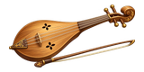
10154 雷贝克琴
160 × 80 px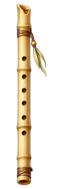
10232 芦笛
80 × 240 px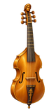
10233 高音古提琴
80 × 160 px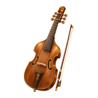
10334 中音古提琴
160 × 160 px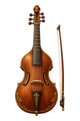
10335 低音古提琴
160 × 240 px10419 管风琴
160 × 240 px20155 月光交响曲
80 × 80 px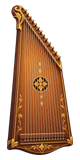
20156 诗琴
80 × 160 px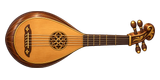
20236 吉特恩琴
160 × 80 px20237 里拉琴
80 × 160 px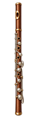
20338 木长笛
80 × 240 px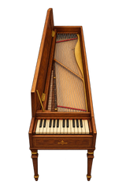
20339 击弦键琴
160 × 240 px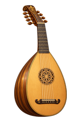
20440 鲁特琴
160 × 240 px30157 小夜曲
80 × 80 px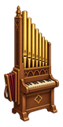
30158 便携风琴
80 × 160 px30241 铃鼓
80 × 80 px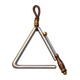
30222 三角铁
80 × 80 px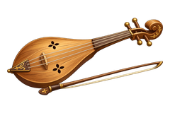
30342 雷贝克琴
240 × 160 px30314 竖琴
160 × 160 px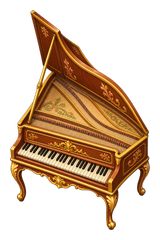
30443 羽管键琴
160 × 240 px40159 蓝色多瑙河
80 × 80 px40160 手鼓
80 × 80 px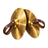
40244 铜镲
80 × 80 px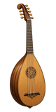
40245 低音鲁特琴
80 × 160 px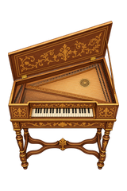
40346 维吉纳琴
160 × 240 px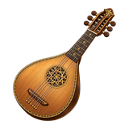
40347 西托琴
160 × 160 px40448 战鼓
160 × 240 px50161 幻想交响曲
80 × 80 px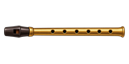
50162 哨笛
160 × 80 px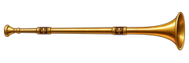
50249 直管号
240 × 80 px50250 猎号
80 × 320 px50323 木琴
80 × 240 px50351 肖姆管
80 × 320 px50452 风笛
240 × 160 px